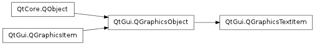

QGraphicsTextItem ¶

Synopsis ¶
Functions ¶
- def adjustSize ()
- def defaultTextColor ()
- def document ()
- def font ()
- def openExternalLinks ()
- def setDefaultTextColor (c)
- def setDocument (document)
- def setFont (font)
- def setHtml (html)
- def setOpenExternalLinks (open)
- def setPlainText (text)
- def setTabChangesFocus (b)
- def setTextCursor (cursor)
- def setTextInteractionFlags (flags)
- def setTextWidth (width)
- def tabChangesFocus ()
- def textCursor ()
- def textInteractionFlags ()
- def textWidth ()
- def toHtml ()
- def toPlainText ()
Signals ¶
- def linkActivated (arg__1)
- def linkHovered (arg__1)
Detailed Description ¶
The PySide.QtGui.QGraphicsTextItem class provides a text item that you can add to a PySide.QtGui.QGraphicsScene to display formatted text.
If you only need to show plain text in an item, consider using PySide.QtGui.QGraphicsSimpleTextItem instead.
To set the item’s text, pass a PySide.QtCore.QString to PySide.QtGui.QGraphicsTextItem ‘s constructor, or call PySide.QtGui.QGraphicsTextItem.setHtml() / PySide.QtGui.QGraphicsTextItem.setPlainText() .
PySide.QtGui.QGraphicsTextItem uses the text’s formatted size and the associated font to provide a reasonable implementation of PySide.QtGui.QGraphicsTextItem.boundingRect() , PySide.QtGui.QGraphicsTextItem.shape() , and PySide.QtGui.QGraphicsTextItem.contains() . You can set the font by calling PySide.QtGui.QGraphicsTextItem.setFont() .
It is possible to make the item editable by setting the Qt.TextEditorInteraction flag using PySide.QtGui.QGraphicsTextItem.setTextInteractionFlags() .
The item’s preferred text width can be set using PySide.QtGui.QGraphicsTextItem.setTextWidth() and obtained using PySide.QtGui.QGraphicsTextItem.textWidth() .
Note
In order to align HTML text in the center, the item’s text width must be set.

Note
PySide.QtGui.QGraphicsTextItem accepts hover events by default. You can change this with PySide.QtGui.QGraphicsItem.setAcceptHoverEvents() .
- class PySide.QtGui. QGraphicsTextItem ( [ parent=None [ , scene=None ] ] ) ¶
- class PySide.QtGui. QGraphicsTextItem ( text [ , parent=None [ , scene=None ] ] )
-
Parameters: - scene – PySide.QtGui.QGraphicsScene
- parent – PySide.QtGui.QGraphicsItem
- text – unicode
- PySide.QtGui.QGraphicsTextItem. adjustSize ( ) ¶
-
Adjusts the text item to a reasonable size.
- PySide.QtGui.QGraphicsTextItem. defaultTextColor ( ) ¶
-
Return type: PySide.QtGui.QColor Returns the default text color that is used to for unformatted text.
- PySide.QtGui.QGraphicsTextItem. document ( ) ¶
-
Return type: PySide.QtGui.QTextDocument Returns the item’s text document.
- PySide.QtGui.QGraphicsTextItem. font ( ) ¶
-
Return type: PySide.QtGui.QFont Returns the item’s font, which is used to render the text.
- PySide.QtGui.QGraphicsTextItem. linkActivated ( arg__1 ) ¶
-
Parameters: arg__1 – unicode
- PySide.QtGui.QGraphicsTextItem. linkHovered ( arg__1 ) ¶
-
Parameters: arg__1 – unicode
- PySide.QtGui.QGraphicsTextItem. openExternalLinks ( ) ¶
-
Return type: PySide.QtCore.bool
- PySide.QtGui.QGraphicsTextItem. setDefaultTextColor ( c ) ¶
-
Parameters: c – PySide.QtGui.QColor Sets the color for unformatted text to col .
- PySide.QtGui.QGraphicsTextItem. setDocument ( document ) ¶
-
Parameters: document – PySide.QtGui.QTextDocument Sets the text document document on the item.
- PySide.QtGui.QGraphicsTextItem. setFont ( font ) ¶
-
Parameters: font – PySide.QtGui.QFont Sets the font used to render the text item to font .
- PySide.QtGui.QGraphicsTextItem. setHtml ( html ) ¶
-
Parameters: html – unicode Sets the item’s text to text , assuming that text is HTML formatted. If the item has keyboard input focus, this function will also call PySide.QtGui.QGraphicsItem.ensureVisible() to ensure that the text is visible in all viewports.
- PySide.QtGui.QGraphicsTextItem. setOpenExternalLinks ( open ) ¶
-
Parameters: open – PySide.QtCore.bool
- PySide.QtGui.QGraphicsTextItem. setPlainText ( text ) ¶
-
Parameters: text – unicode Sets the item’s text to text . If the item has keyboard input focus, this function will also call PySide.QtGui.QGraphicsItem.ensureVisible() to ensure that the text is visible in all viewports.
- PySide.QtGui.QGraphicsTextItem. setTabChangesFocus ( b ) ¶
-
Parameters: b – PySide.QtCore.bool If b is true, the Tab key will cause the widget to change focus; otherwise, the tab key will insert a tab into the document.
In some occasions text edits should not allow the user to input tabulators or change indentation using the Tab key, as this breaks the focus chain. The default is false.
See also
PySide.QtGui.QGraphicsTextItem.tabChangesFocus() ItemIsFocusable PySide.QtGui.QGraphicsTextItem.textInteractionFlags()
- PySide.QtGui.QGraphicsTextItem. setTextCursor ( cursor ) ¶
-
Parameters: cursor – PySide.QtGui.QTextCursor
- PySide.QtGui.QGraphicsTextItem. setTextInteractionFlags ( flags ) ¶
-
Parameters: flags – PySide.QtCore.Qt.TextInteractionFlags
- PySide.QtGui.QGraphicsTextItem. setTextWidth ( width ) ¶
-
Parameters: width – PySide.QtCore.qreal Sets the preferred width for the item’s text. If the actual text is wider than the specified width then it will be broken into multiple lines.
If width is set to -1 then the text will not be broken into multiple lines unless it is enforced through an explicit line break or a new paragraph.
The default value is -1.
Note that PySide.QtGui.QGraphicsTextItem keeps a PySide.QtGui.QTextDocument internally, which is used to calculate the text width.
- PySide.QtGui.QGraphicsTextItem. tabChangesFocus ( ) ¶
-
Return type: PySide.QtCore.bool Returns true if the Tab key will cause the widget to change focus; otherwise, false is returned.
By default, this behavior is disabled, and this function will return false.
- PySide.QtGui.QGraphicsTextItem. textCursor ( ) ¶
-
Return type: PySide.QtGui.QTextCursor
- PySide.QtGui.QGraphicsTextItem. textInteractionFlags ( ) ¶
-
Return type: PySide.QtCore.Qt.TextInteractionFlags Returns the current text interaction flags.
- PySide.QtGui.QGraphicsTextItem. textWidth ( ) ¶
-
Return type: PySide.QtCore.qreal Returns the text width.
The width is calculated with the PySide.QtGui.QTextDocument that PySide.QtGui.QGraphicsTextItem keeps internally.
- PySide.QtGui.QGraphicsTextItem. toHtml ( ) ¶
-
Return type: unicode Returns the item’s text converted to HTML, or an empty PySide.QtCore.QString if no text has been set.
- PySide.QtGui.QGraphicsTextItem. toPlainText ( ) ¶
-
Return type: unicode Returns the item’s text converted to plain text, or an empty PySide.QtCore.QString if no text has been set.